UniDex: A Robot Foundation Suite for Universal Dexterous Hand Control from Egocentric Human Videos
面向 junior PhD 组会准备的中文精读报告：围绕 WAM / 灵巧手 VLA 复现路线，拆解动机、方法、实验、图表证据和复现风险。
1. 论文速览
1.1 一句话贡献与论文定位
先明确论文解决的任务、核心机制与直接收益，再判断它属于数据、表示、世界模型、策略还是完整机器人系统。
1.2 阅读路线与核心结论
阅读顺序应从任务定义进入方法信息流，再用主结果、消融和真实部署证据检验核心结论，最后回到复现成本与适用边界。
一句话总结：构建 UniDex 数据、FAAS 统一动作空间和 UniDex-VLA，面向多种灵巧手实现从人类第一视角视频到机器人控制的通用套件。
UniDex 不是单一策略模型，而是一套从人类第一视角视频到多种机器人灵巧手控制的 foundation suite。它包含人手运动恢复与重定向、跨手型统一动作表示 FAAS、数据资产以及 UniDex-VLA 的预训练和微调流程。阅读重点应放在数据与动作接口如何统一不同 embodiment，而不是只比较某个成功率。
把人类第一视角视频、统一动作空间和多手型控制套件串起来，是灵巧手 VLA 数据与工程管线的重点论文。
| 阅读项 | 内容 |
| 关键词 | UniDex; UniDex-VLA; FAAS; egocentric human video; cross-hand transfer; dexterous manipulation |
| 论文类型 | 通用灵巧手 VLA |
| 复现价值 | 很值得重点看 |
| 开源情况 | 代码、数据处理、预训练/微调流程开源 |
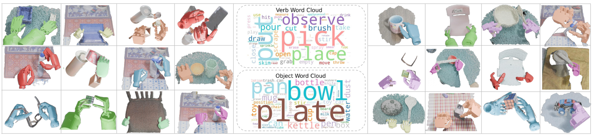
读图要点：这张图支撑数据/任务覆盖范围的 claim，需要关注物体、场景、手型和评估 split 是否足以支撑泛化结论。
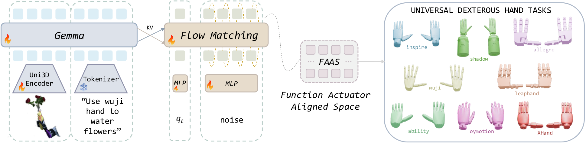
读图要点：这张图主要说明系统模块与信息流，读的时候要把输入、动作表示、模型主体和输出接口分开标注，避免只记住一个模型名字。
2. 研究问题与动机
2.1 要解决什么问题
将论文问题拆成输入、输出、动作空间、任务分布与评估目标，避免只用一句宽泛的“提升泛化能力”概括。
2.2 已有方法的局限
区分数据不足、动作表示不统一、视觉泛化不足、长时序误差和真实控制接口等不同瓶颈。
2.3 本文的解决思路与关键假设
检查论文通过何种表示或模块缓解瓶颈，同时明确其成功依赖的训练数据、硬件与任务假设。
灵巧手研究的主要障碍之一是每种手型拥有不同关节拓扑、自由度和控制接口，导致为一只手采集的数据难以迁移到另一只手。同时，真实机器人示范昂贵，而人类第一视角视频数量丰富。UniDex 希望把人类视频转化为可被多种机器人手共同利用的训练信号，并建立统一的预训练、适配和评估管线。
灵巧手与普通夹爪最大的区别在于动作空间、接触模式和任务反馈都更复杂。VLA 或 world model 如果只解决语言理解，而没有解决高维动作表示和接触动态，就很难真正迁移到灵巧操作。
| 痛点 | 为什么重要 |
| 高自由度动作 | 手指、腕部、物体接触共同决定成败，不能只预测末端位姿。 |
| 数据稀缺 | 真实灵巧手示范昂贵，且跨手型难复用。 |
| 跨场景泛化 | 光照、背景、物体形状和材质变化会破坏视觉策略。 |
| 复现成本 | 硬件、数据格式、控制频率和仿真环境都会成为实际门槛。 |
4. 方法详解
4.1 方法概览与信息流
从原始观测与指令开始，沿模型的数据流追踪到动作、未来状态或规划结果，明确训练和推理阶段的差异。
4.2 核心表示与模块职责
分别说明视觉、语言、动作、状态和接触信息如何编码，以及每个模块究竟承担理解、预测、生成还是控制。
4.3 训练目标、数学结构与关键假设
定位决定方法行为的损失函数、条件变量、潜变量或规划代价，并解释这些设计为何适合论文任务。
4.4 面向复现的实现细节
记录模型规模、输入输出维度、数据频率、动作分块、训练阶段和部署接口；论文未说明的部分必须标记为不确定。
管线首先从 egocentric human video 恢复手部与物体运动，再将人手动作映射到机器人可执行空间。FAAS 作为跨 embodiment 的统一动作接口，描述手部运动而非绑定某一组关节索引；各机器人手通过对应映射器解释该动作。UniDex-VLA 在统一数据上进行预训练，再针对具体手型和任务微调。方法的关键不只是网络，而是坐标系、运动重定向、动作规范化和手型适配器。
4.1 模块化阅读图
- 核心价值在于 suite：数据处理、动作空间、预训练/微调和评估流程，而不只是单个 policy。
- FAAS/统一动作表示用于缓解不同灵巧手之间的 embodiment gap。
- UniDex-VLA 关注从语言/视觉条件到灵巧手控制的端到端或分层迁移。
- 阅读时要把数据来源、手型映射、策略输入输出和下游任务分开画图。
4.2 关键表示与接口
| 接口 | 应检查的问题 |
| 视觉输入 | 使用原始图像、mask、DINO/ViT 特征，还是视频 latent？ |
| 语言输入 | 是高层 planner、任务条件，还是直接进入 action head？ |
| 动作表示 | 关节角、末端位姿、手部 keypoint、latent action，还是 action chunk？ |
| 训练目标 | behavior cloning、diffusion denoising、world-model prediction、contrastive objective 还是混合损失？ |
| 部署方式 | 端到端策略、分层控制、MPC/CEM 规划，还是离线评估？ |

读图要点：这张图支撑数据/任务覆盖范围的 claim，需要关注物体、场景、手型和评估 split 是否足以支撑泛化结论。
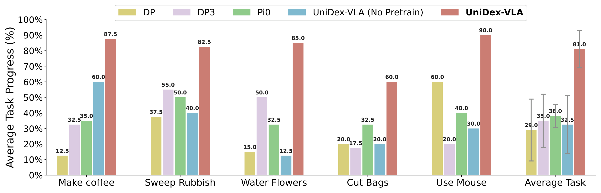
读图要点：这张图支撑数据/任务覆盖范围的 claim，需要关注物体、场景、手型和评估 split 是否足以支撑泛化结论。
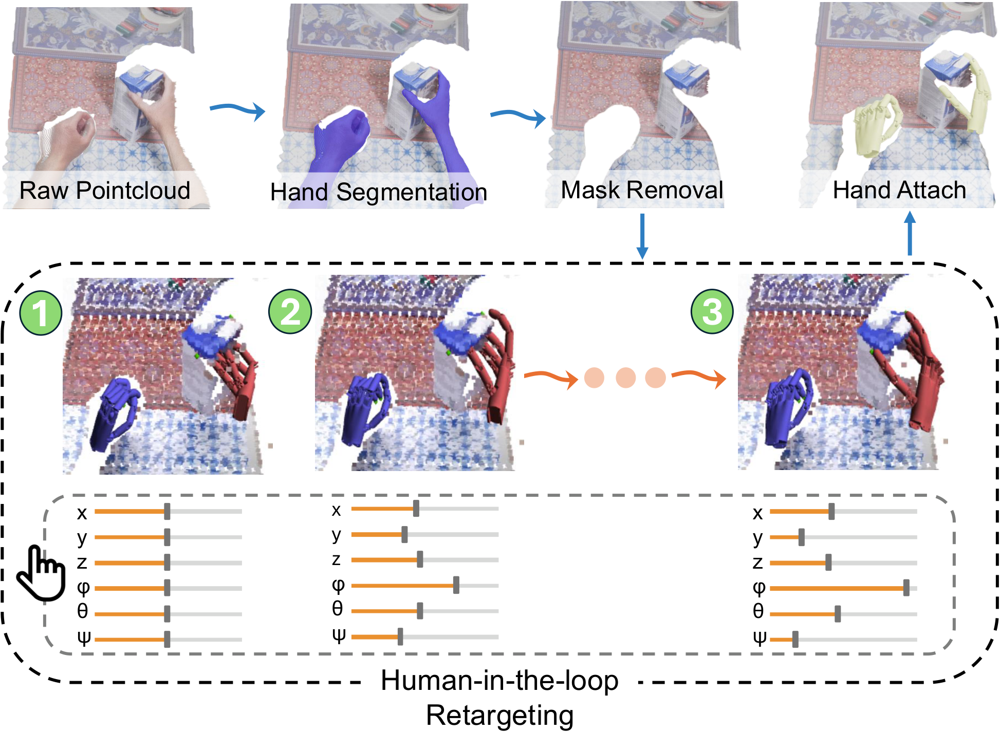
读图要点：这张图主要说明系统模块与信息流，读的时候要把输入、动作表示、模型主体和输出接口分开标注，避免只记住一个模型名字。
5. 实验与结果
5.1 实验设置与评估协议
核对训练测试划分、任务数量、物体与场景覆盖、基线、指标、重试次数和成功判定。
5.2 主要结果
主结果回答方法是否有效；应同时关注绝对性能、相对提升、方差和不同任务类别上的一致性。
5.3 消融实验
消融应回答性能来自哪里；检查被移除组件、训练预算和评估条件是否公平。
5.4 定性结果、失败案例与附录证据
定性图用于理解模型行为与失败模式，附录则常包含复现所需的超参数、额外任务和边界案例。
实验应分三层阅读：首先验证从人类视频恢复和重定向出的轨迹质量；其次检查同一动作表示是否能在多种灵巧手上执行；最后看 UniDex-VLA 在空间泛化、物体泛化和跨 embodiment transfer 上的表现。原始图中包含 FAAS、工作站、任务集合、空间/物体泛化和 transfer 结果，说明作者试图用完整证据链证明 suite 的通用性。
5.1 读实验时先看什么
- 看跨手型、跨任务、跨物体的泛化是否真的由统一动作空间贡献。
- 关注是否给出数据规模、预训练/微调 recipe、真实机器人验证与开源可复现性。
- 与 DexGraspVLA 相比，它更像基础设施；与 XL-VLA 相比，它更强调 suite 完整性。
5.2 图表证据链
| 证据 | 支持的 claim | 仍需警惕 |
| 系统/架构图 | 说明模块职责和信息流。 | 架构清楚不等于每个模块都有效。 |
| 主结果表 | 证明任务成功率或预测质量。 | 需要看任务规模和测试分布。 |
| 消融实验 | 定位收益来自表示、数据还是模型。 | 消融是否公平、是否覆盖关键替代方案。 |
| 定性图 | 展示真实/仿真交互细节。 | 好看的图不能替代大规模统计。 |
| 附录细节 | 给出训练、数据、超参和失败案例。 | 很多复现风险藏在附录。 |
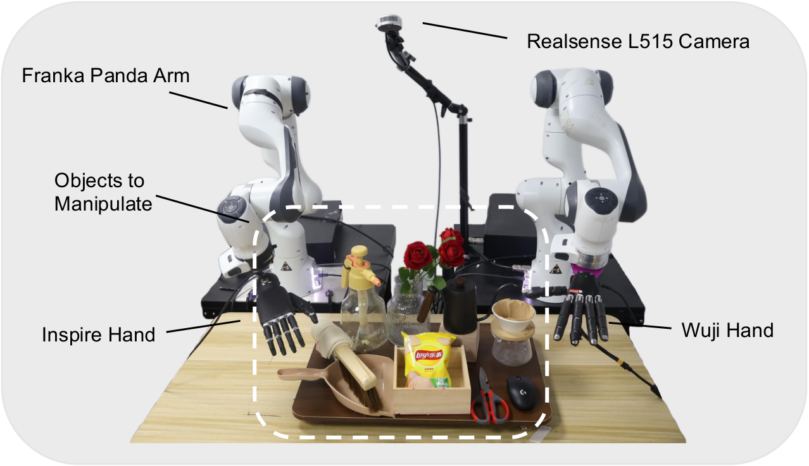
读图要点：这张图主要说明系统模块与信息流，读的时候要把输入、动作表示、模型主体和输出接口分开标注，避免只记住一个模型名字。
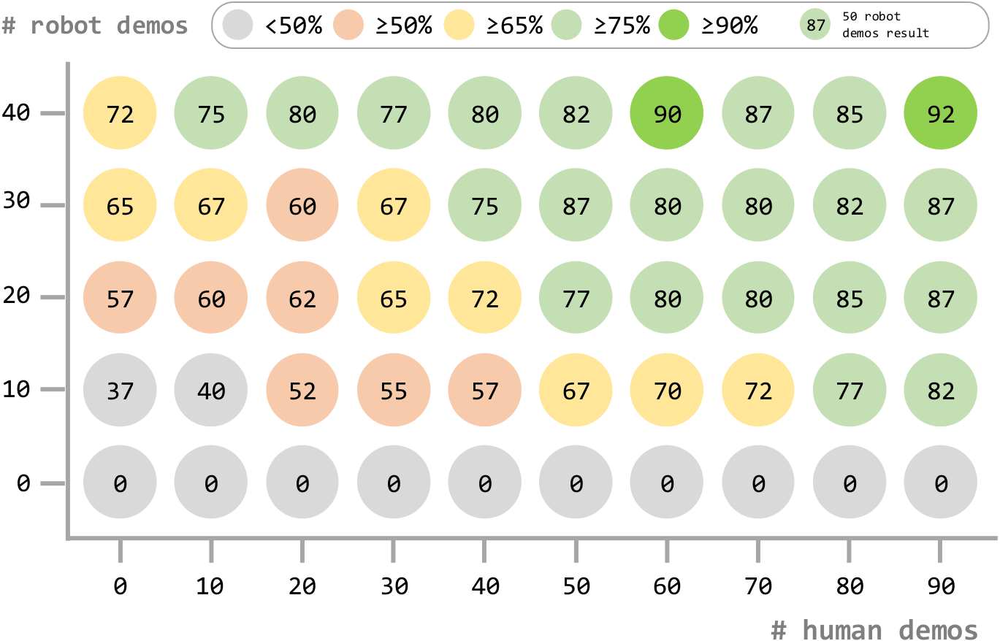
读图要点：这张图支撑数据/任务覆盖范围的 claim，需要关注物体、场景、手型和评估 split 是否足以支撑泛化结论。
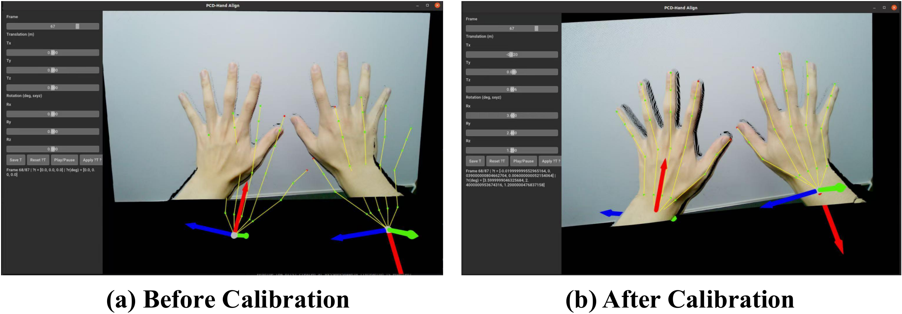
读图要点：这张图或表支撑实验结论，重点看 baseline、指标定义、任务数量和消融变量是否与主张一一对应。
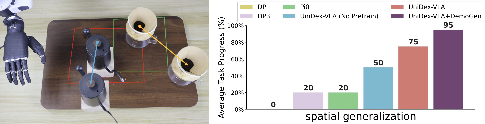
读图要点：这张图主要说明系统模块与信息流，读的时候要把输入、动作表示、模型主体和输出接口分开标注，避免只记住一个模型名字。
6. 复现要点
6.1 最小可行复现路径
先复现单一任务或离线指标，确认数据与动作接口正确，再扩展到完整系统和真实机器人。
6.2 数据、模型、训练与硬件清单
逐项核对数据许可、预处理脚本、权重、依赖版本、训练预算、传感器、机器人与安全控制。
6.3 复现风险与验收标准
为每个阶段定义可观测的验收指标，优先排查数据时间对齐、坐标系、动作尺度和评估协议。
复现工作量集中在数据管线。需要下载并处理人类第一视角视频、运行手部/物体运动恢复、统一坐标系、实现 FAAS 与目标手型之间的映射，并准备至少一种真实或仿真灵巧手。应先验证单条轨迹重定向是否合理，再进行 VLA 训练；否则动作标签错误会被模型学习并放大。版本、标定文件和手型 URDF 是关键依赖。
6.1 复现风险清单
- 数据处理链条长，容易卡在格式/标定。
- 跨手型 mapping 可能隐藏大量工程细节。
- 真实复现实验需要匹配其手型与遥操作系统。
| 维度 | 检查项 |
| 代码 | 仓库是否包含训练、评估、数据预处理和模型权重加载。 |
| 数据 | 是否公开原始数据、标注、过滤脚本和 split。 |
| 模型 | 是否给出 backbone、tokenizer、action head、world model 的尺寸与权重。 |
| 训练 | batch size、学习率、epoch、GPU、随机种子和日志是否足够。 |
| 硬件 | 手型、相机、控制频率和安全策略是否能匹配。 |
| 评估 | 成功率定义、重试次数、任务分布和失败统计是否清楚。 |
7. 分析、局限与边界
7.1 最有价值的贡献
判断论文真正可迁移的资产是数据、动作表示、模型模块、训练范式，还是完整系统经验。
7.2 证据为什么站得住
把每个主要主张对应到主结果、消融、定性图和真实部署证据，并指出证据链中仍然薄弱的环节。
7.3 作者局限、额外边界与可能改进
区分论文明确承认的局限与基于证据推断的边界，提出可验证的改进方向而非空泛展望。
UniDex 的价值是降低跨手型研究门槛，但统一动作空间可能掩盖不同手型在接触能力、关节耦合和可达空间上的本质差异。人类视频恢复误差、遮挡和尺度歧义也会进入训练数据。套件展示了 transfer 潜力，但不能保证任何人手动作都能被任意机器人手物理实现。
对你的课题而言，最重要的不是把所有论文都当成可直接复现的系统，而是判断它们在链路中的位置：有的是数据/动作表示，有的是世界模型，有的是 VLA 控制器，有的是高自由度真实系统。只有把位置分清，才知道该复现哪一段、创新该放在哪里。
8. 组会问答准备
Q1: 这篇论文的核心 novelty 是什么？
构建 UniDex 数据、FAAS 统一动作空间和 UniDex-VLA，面向多种灵巧手实现从人类第一视角视频到机器人控制的通用套件。
Q2: 它最适合放在你的哪条研究线上？
把人类第一视角视频、统一动作空间和多手型控制套件串起来，是灵巧手 VLA 数据与工程管线的重点论文。
Q3: 哪个实验最有说服力？
优先看主结果表与关键消融：主结果回答“能不能做”，消融回答“为什么能做”。如果二者缺一，论文 claim 的可信度都要打折。
Q4: 最大复现风险是什么？
优先检查数据、动作接口和硬件环境。对灵巧手论文来说，代码开源不等于可复现，真正的难点常常在遥操作数据格式、相机标定、控制频率和安全策略。
Q5: 下一步可以怎么用？
它最值得借鉴的是数据和 action interface。若计划长期做多手型灵巧操作，应优先研究 FAAS 与数据处理流程；若只想快速得到单手任务结果，DexGraspVLA 可能更直接。
9. 补充图解与附录证据
9.1 尚未在正文展开的高价值原论文插图
本节继续利用论文原始插图补足方法、数据、实验与部署证据。每张图均保留原始图注，并给出阅读重点；它们用于扩展证据链，而不是装饰页面。
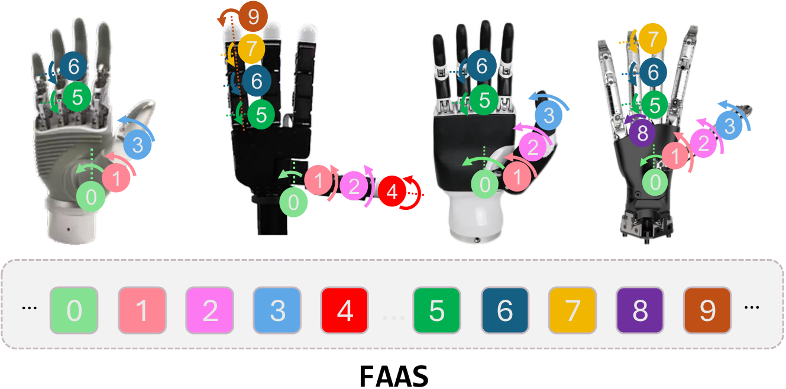
读图要点：把该图放回论文论证链中阅读：它支持什么主张、控制了什么变量、又遗漏了哪些边界情况。
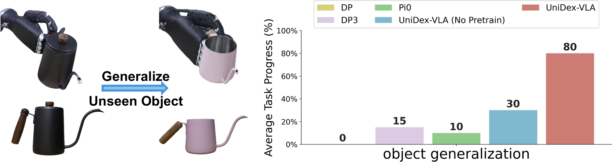
读图要点：检查任务、物体、场景和具身形态覆盖范围，判断实验分布是否足以支撑论文的泛化主张。
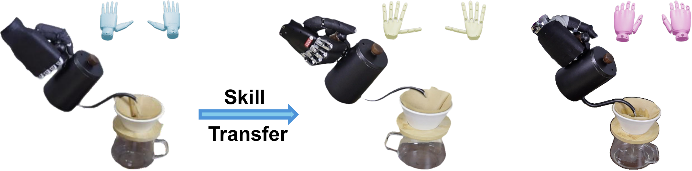
读图要点：检查任务、物体、场景和具身形态覆盖范围，判断实验分布是否足以支撑论文的泛化主张。
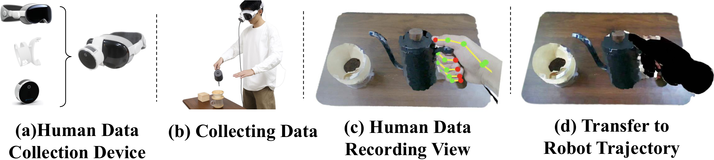
读图要点：关注真实硬件、传感器、控制频率和失败案例；这些细节决定方法离可复现系统还有多远。
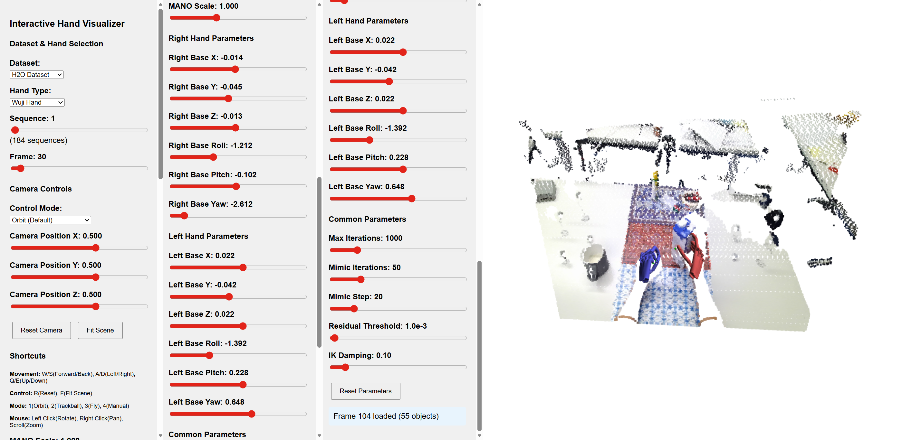
读图要点：关注真实硬件、传感器、控制频率和失败案例；这些细节决定方法离可复现系统还有多远。

读图要点：关注真实硬件、传感器、控制频率和失败案例；这些细节决定方法离可复现系统还有多远。